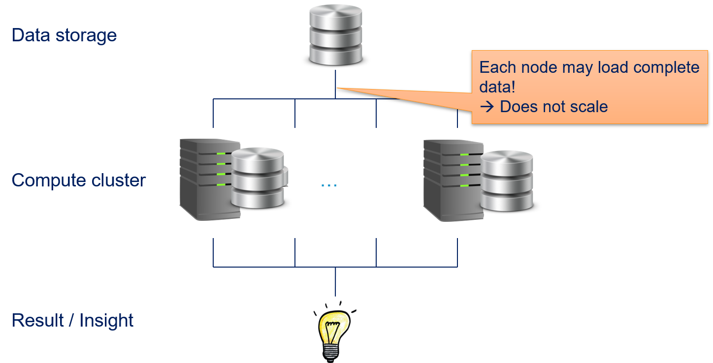
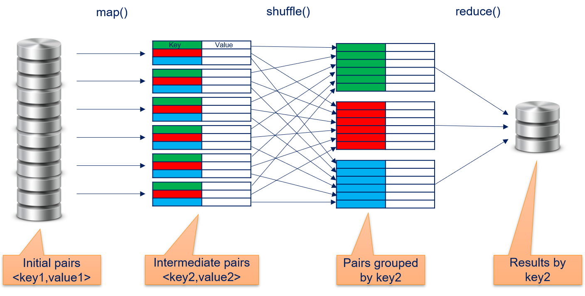
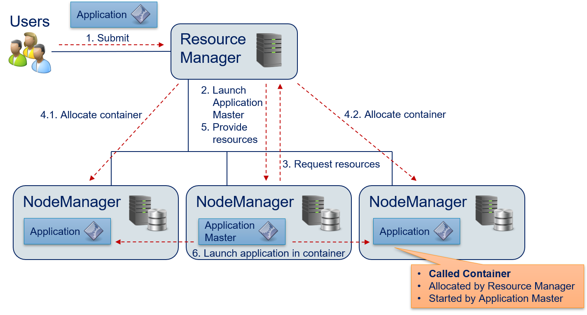
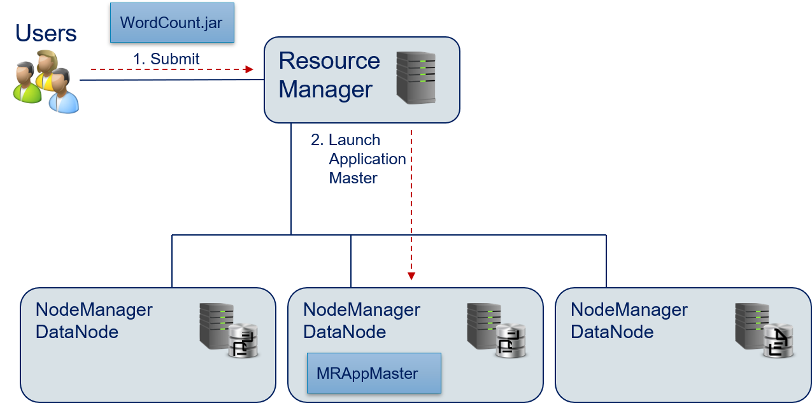
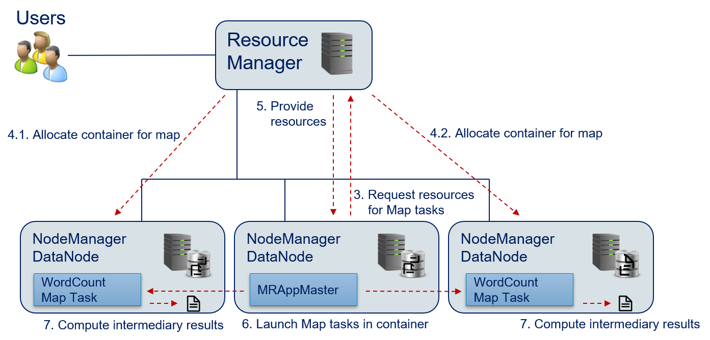
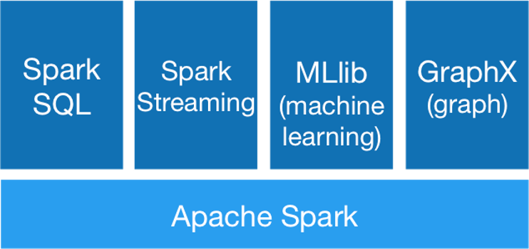

---
redirect_from:
  - "/12-big-data-and-map-reduce"
interact_link: content/12_Big-Data-and-Map-Reduce.ipynb
kernel_name: python3
kernel_path: content
has_widgets: false
title: |-
  Big Data Processing
pagenum: 12
prev_page:
  url: /11_Statistics.html
next_page:
  url: /Exercises.html
suffix: .ipynb
search: data hadoop map key mapreduce reduce function spark not application value hdfs tasks e job output input count resources values file functions resource manager big used results such distributed required also compute pairs text g example only img src images png alt style width px apache where user standard list class computational memory applications execution shuffle line namenode same storage nodes context processing should cluster keys yarn mrappmaster different single thus computations stored block task multiple written datanodes datanode java python intwritable executed using read analysis users types name finished streaming because network does node often pair new defined bond

comment: "***PROGRAMMATICALLY GENERATED, DO NOT EDIT. SEE ORIGINAL FILES IN /content***"
---

    <main class="jupyter-page">
    <div id="page-info"><div id="page-title">Big Data Processing</div>
</div>
    
<div class="jb_cell">

<div class="cell border-box-sizing text_cell rendered"><div class="inner_cell">
<div class="text_cell_render border-box-sizing rendered_html">
<h2 id="Distributed-Computing">Distributed Computing<a class="anchor-link" href="#Distributed-Computing"> </a></h2><p>As we know from <a href="01_Introduction">Chapter 1</a>, Big Data is data whose volume, velocity, and variety requires <em>innovative forms of information processing</em>. In this chapter, we want to discuss in greater detail why this is the case and how Big Data can processed.</p>
<p>The foundation of any large computational effort is <em>parallelism</em>. There is a famous quote from computer science pioneer Grace Hopper: "<em>In pioneer days they used oxen for heavy pulling, and when one ox couldn't budge a log, they didn't try to grow a larger ox. We should be trying for bigger computers, but for more systems of computers</em>. In other words, large tasks can only be solved by pooling resources. There are three general methods for the parallelization of computational tasks.</p>
<h3 id="Parallel-Programming-Models">Parallel Programming Models<a class="anchor-link" href="#Parallel-Programming-Models"> </a></h3><p>First approach <em>message passing</em> tasks are executed independently in isolated environments. Whenever these tasks want to communicate, they send messages to each other. This way, the tasks can exchange data between each other, e.g., because the data is required by different parts of the computation. This communication can be done locally on one physical machine, by using the provided functions by the operating system, or remotely in a distributed environment by communicating via the network.</p>
<p>The second approach is <em>shared memory</em>. In this case, the computational tasks are not performed in isolated environments, but share a common address space in the memory, i.e., they can read and write the same variables. Interactions between the tasks happens by updating the values of variables in the shared memory. Sharing memory within a single physical machine is directly supported by the operating system, and may even be a property of the model for parallelization (threads share the same memory, processes not). Sharing memory across different physical machines is also possible, e.g., via network attached storage of other networking solutions, but usually has some communication overhead.</p>
<p>The third approach is <em>data parallelism</em>. Similar to message passing, tasks are executed independently in isolated environments. The difference to message passing is that the tasks do not need to communicate with each other, because the solution of the computational tasks does not require intermediary results of other tasks. Thus, the application of data parallelism is limited to problems where this strong decoupling of tasks is possible. Such problems are also called <em>embarrassingly parallel</em>.</p>
<h3 id="Distributed-Computing-for-Data-Analysis">Distributed Computing for Data Analysis<a class="anchor-link" href="#Distributed-Computing-for-Data-Analysis"> </a></h3><p>Since Big Data is to large to compute or store on single physical machines, we need a distributed environment for computations that involve Big Data. Before computational centers started to account for Big Data, the architecture of such a <em>compute cluster</em> was similar to the outline below.</p>
<p></p>
<p>There is a layer for data storage and a layer for computations. Both are using different <em>nodes</em> in the compute cluster. Each node is a physical machine. Data storage nodes must provide fast storage (latency, throughput, or both), but do not require much computational power. This is usually implement in a database or a <em>storage area network</em> (SAN). Vice versa, compute nodes must provide the computational power through CPUs (and possibly GPUs) and a sufficient amount of memory, local storage is less important and often only used for caching and the installation of software. A user of such a system submits jobs to a job queue to gain insights. For the analysis of data, this means that the data is stored in the database or SAN and then accessed by the compute nodes to generate the desired results of the analysis, from which the data scientists can get insights.</p>
<p>All three parallelization modes we discussed above can be implemented in such a traditional distributed compute cluster. However, none of these approaches is suitable for big data applications in such a compute cluster. Message passing and shared memory have the biggest scalability problems.</p>
<p></p>
<p>Since it is unclear which parts of the data are required by the different parallel tasks, it is possibly that every compute node must load all data. While this is not a problem for small data sets, this does not scale with large data sets. Imagine that Terabytes, or even Petabytes of data would have to be copied regularly over the network. The transfer of the data would block the execution of the analysis and the compute nodes would be mostly idle, waiting for data. This does not even account for additional network traffic due to the communication between the tasks.</p>
<p>Data parallelization fares a bit better, but also does not scale.</p>
<p></p>
<p>The advantage of message passing and shared memory is that only parts of the data must be copied to each compute node. While this decreases the stress on the network, all data must still be transfered over network. Thus, data parallelization can handle larger amounts of data than message passing and shared memory, at some point the amount of data becomes to large for the transfer via the network.</p>
<h3 id="Data-Locality">Data Locality<a class="anchor-link" href="#Data-Locality"> </a></h3><p>We see that there is a fundamental problem with traditional distributed computing for big data, which is why we need the <em>innovative forms of information processing</em>. The solution is actually quite simple: if the problem is that we cannot copy our data over the network, we must change our architecture such that avoid that. The straightforward way to achieve this is to break the separation of the storage layer from the compute layer: all nodes both store data and can perform computations on that data.</p>
<p></p>
<p>In the following, we explain how this is implemented in practice. We discuss the MapReduce programming model that became the defacto standard for Big Data applications. Then, we show Apache Hadoop and Apache Spark to demonstrate how the distributed computing with Big Data is implemented.</p>

</div>
</div>
</div>
</div>

<div class="jb_cell">

<div class="cell border-box-sizing text_cell rendered"><div class="inner_cell">
<div class="text_cell_render border-box-sizing rendered_html">
<h2 id="MapReduce">MapReduce<a class="anchor-link" href="#MapReduce"> </a></h2><p>The MapReduce paradigm for data the data parallelization to enable BigData processing was <a href="https://doi.org/10.1145/1327452.1327492">published by Google in 2004</a>. The general idea is to describe computations using two different kinds of functions: <em>map</em> functions and <em>reduce</em> functions. Both functions work with <em>key-value pair</em>. Map functions implement the embarrassingly parallel part of algorithms, reduce functions aggregate the results. The concept of map functions and reduce functions is not unique to MapReduce, but a general concept that can be found in many functional programming languages. To enable Big Data, MapReduce introduces a third function, the <em>shuffle</em>. The only task of the <em>shuffle</em> is to arrange intermediate results, i.e., to facilitate the communication between the map and reduce functions. The following figure gives an overview of the dataflow of MapReduce.</p>
<p></p>
<h3 id="map()">map()<a class="anchor-link" href="#map()"> </a></h3><p>The map function gets initial key-value pairs. These are, e.g., read from the the distributed storage or the result of a prior computation using MapReduce. The map function than performs a computation on a <em>single</em> key-value pair and stores the results in new key-value pairs. Because the map function only gets a single key-value pair as input, data parallelization is trivial: theoretically, the map function could run in parallel for all key-value pairs without any problem. The map function is defined as</p>
$$map(f_{map}, &lt;key1, value1&gt;) \rightarrow list(&lt;key2, value2&gt;)$$<p>where $f_{map}$ is a <em>user-defined function</em> (UDF) defined by the user of the MapReduce framework. The UDF defines the computation, i.e., how the input key-value pair is transformed into the list of output key-value pairs. Depending on the UDF $f_{map}$, the input keys and output keys could be same or different. While the general concept of MapReduce does not have any restrictions on the type and values of the keys, implementations of MapReduce may restrict this. For example, in the initial implementation of MapReduce by Google, all keys and values were strings and users of MapReduce were expected to convert the types within the map and reduce functions, if required.</p>
<h3 id="shuffle()">shuffle()<a class="anchor-link" href="#shuffle()"> </a></h3><p>The key-value pairs computed by the map function are organized by the shuffle function, such that the data is grouped by the key. These are then organized by the shuffle and grouped by their keys. Thus, we have</p>
$$shuffle(list&lt;key2, value2&gt;) \rightarrow list(&lt;key2, list(value2)&gt;),$$<p>i.e., a list of values per key. Often, these data from shuffle is sorted by key, because this can sometimes improve the efficiency of subsequent tasks. The shuffling is often invisible to the user performed in the background by the MapReduce framework.</p>
<h3 id="reduce()">reduce()<a class="anchor-link" href="#reduce()"> </a></h3><p>The reduce function operates on all values for a given key and aggregates the data into a single result per key.  The reduce function is defined as</p>
$$reduce(f_{reduce}, &lt;key2, list(value2)&gt;) \rightarrow value3$$<p>where $f_{reduce}$ is a UDF. The UDF $f_{reduce}$ performs the reduction to a single value for one key and gets as input the key and the related list of values. Similar as for the map function, there is no restriction on the type or the values that are generated. Depending on the task, the output could, e.g.,  be key value pairs, integers, or textual data.</p>
<h3 id="Word-Count-with-MapReduce">Word Count with MapReduce<a class="anchor-link" href="#Word-Count-with-MapReduce"> </a></h3><p>The concept of MapReduce is relatively abstract, unless you are used to functional programming. How MapReduce works becomes clearer with an example. The "Hello World" of MapReduce is the word count, i.e., using MapReduce to count how often each word occurs in a text. This example is both practically relevant, e.g., to create a bag-of-words, and well suited to demonstrate how MapReduce works.</p>
<p>We use the following text as example:</p>

<pre><code>What is your name?
The name is Bond, James Bond.</code></pre>
<p>Our data is stored in a text file with one line per sentence. Our initial keys are the line numbers, our initial values the text in the lines. Thus, we start with these key-value pairs.</p>

<pre><code>&lt;line1, "What is your name?"&gt;
&lt;line2, "The name is Bond, James Bond."&gt;</code></pre>
<p>The map function is defined such that it emits the pair &lt;word, 1&gt; for each word in the input. When we apply this to our input, we get the following list of key-value pairs.</p>

<pre><code>&lt;"what", 1&gt;
&lt;"is", 1&gt;
&lt;"your", 1&gt;
&lt;"name", 1&gt;
&lt;"the", 1&gt;
&lt;"name", 1&gt;
&lt;"is", 1&gt;
&lt;"bond", 1&gt;
&lt;"james", 1&gt;
&lt;"bond", 1&gt;</code></pre>
<p>The shuffle then groups the values by their keys, such that all values for the same key are in a list.</p>

<pre><code>&lt;"bond", list(1, 1)&gt;
&lt;"is", list(1, 1)&gt;
&lt;"james", list(1)&gt;
&lt;"name", list(1, 1)&gt;
&lt;"the", list(1)&gt;
&lt;"what", list(1)&gt;
&lt;"your", list(1)&gt;</code></pre>
<p>As reduce function, we output one line for each key. The lines contain the current key and the sum of the values of that key.</p>

<pre><code>bond 2
is 1
james 1
name 2
the 1
what 1
your 1</code></pre>
<h3 id="Parallelization">Parallelization<a class="anchor-link" href="#Parallelization"> </a></h3><p>The design of MapReduce enables parallelization for every step of the computational process. The input can be read in chunks to parallelize the creation of the initial key-value pairs. For example, we could have multiple text files, each with 1000 lines that could be processed in parallel. The parallelism is limited by the throughput of the storage and makes more sense, if the data is distributed across multiple physical machines.</p>
<p>map() can be applied to each key-value pair independently and the potential for parallelism is only limited by the amount of data.</p>
<p>shuffle() can start as soon as the first key-value pair is processed by the map function. This reduces the waiting times, such that the shuffling is often finished directly after the last computations for map are finished.</p>
<p>reduce() can run in parallel for different keys. Thus, the parallelism is only limited by the number of unique keys created by map(). Moreover, reduce() can already start, once all results for a key are available. This is where sorting by shuffle can help. If the results passed to reduce() are sorted, reduce can start processing for a key, once it sees results for the next key.</p>

</div>
</div>
</div>
</div>

<div class="jb_cell">

<div class="cell border-box-sizing text_cell rendered"><div class="inner_cell">
<div class="text_cell_render border-box-sizing rendered_html">
<h2 id="Apache-Hadoop">Apache Hadoop<a class="anchor-link" href="#Apache-Hadoop"> </a></h2><p><a href="https://hadoop.apache.org/">Apache Hadoop</a> is an open source implementation of MapReduce. For many years, Hadoop was the standard solution for any MapReduce application and Hadoop is still relevant for many applications. All major cloud providers offer Hadoop clusters in their portfolio. Hadoop 2.0 implements MapReduce in an architecture with three layers.</p>
<p></p>
<p>The lowest layer is the <em>Hadoop Distributed File System</em> (HDFS) that is in charge of the data management. <em>Yet Another Resource Negotiator</em> (YARN) is running on top of the file system. YARN manages the use of computational resources within a Hadoop cluster. Applications for data processing that want to use the Hadoop cluster are running on top of YARN. For example, such applications can be written with the Hadoop implmentation of MapReduce. However, due to the success of the HDFS and YARN, there are also other technologies that can be used for data processing, e.g., <a href="#Apache-Spark">Apache Spark</a>, which we discuss below.</p>
<h3 id="HDFS">HDFS<a class="anchor-link" href="#HDFS"> </a></h3><p>The HDFS is the core of Hadoop. All data that should be analyzed is stored in the HDFS. HDFS was designed with the goal to enable Big Data processing, which is why HDFS behave quite differently from other file systems that we regularly use like NTFS, ext3, or xfs.</p>
<ul>
<li>HDFS favors high throughput at the cost of low latency. This means that loading and storing large amounts of data is fast, but you may have to wait some time before the operation starts. </li>
<li>HDFS supports extremely large files. The file size is only limited by the amount of <em>distributed</em> storage, i.e., files can be large than the storage available at a single node. </li>
<li>HDFS is designed to support data local computations and minimize the data that needs to be send around in a cluster for file operations.</li>
<li>Since outages of single nodes in a large compute cluster is not a rare event, but rather a part of the daily work, HDFS is designed to be resilient against hardware failures, such that there is no loss of data and no interruption of service. </li>
</ul>
<p>In principle, HDFS uses a master/worker paradigm with a <em>NameNode</em> that manages <em>DataNodes</em>.</p>
<p></p>
<p>Clients access the HDFS via the NameNode. All file system operations, such as the creating, deletion, copying of a file is performed by requesting this at the NameNode. Whenever a file is created, it is split into smaller blocks. The NameNode organizes the creation, deletion, and replication of <em>blocks</em> on DataNodes. Replication means that each block is not just stored on a single DataNode, but on multiple DataNodes. This ensures that no data is lost, if a data node is lost. To avoid that the HDFS is not available if the NameNode crashes, there can also be a secondary NameNode. This avoids that the NameNode is a single point of failure. If there is a problem with the primary NameNode, the secondary NameNode can take over without loss of service.</p>
<p>Another important aspect of the HDFS is that while users access the HDFS via the NameNode, the actual data is never send via the NameNode to the DataNodes, but directly from the users to the DataNodes. The following figure shows how a file in HDFS is created by a user.</p>
<p></p>
<ol>
<li>The user contacts the NameNode with the request to create a new file. </li>
<li>The name node responds with a data stream that can be used for writing the file. From the users perspective, this is a normal file stream that would be used for local data access (e.g., <code>FileInputStream</code> in Java, <code>ifstream</code> in C++, <code>open</code> in Python).</li>
<li>The user writes the contents of the file to the file stream. The NameNode configured the file stream with the information how the blocks should look like and where the data should be send. The data is directly send block-wise to one of the DataNodes. </li>
<li>The DataNode that receives the block does not necesarily store the block itself. Instead, the block may be forwarded to other DataNodes for storage. Each block is stored at different nodes and the number of these nodes is defined by the <em>replication level</em>. Moreover, the HDFS ensures that blocks are evenly distributed among the data nodes, i.e., a DataNode only stores multiple blocks of a file, if the block cannot be stored at another DataNode. Ideally, all DataNodes store the same amount of blocks of a file.</li>
<li>When a DataNode stores a block, this is acknowledged to the DataNode that receives the data from the user.</li>
<li>Once the DataNode received acknowledgements for all replications of a block, the DataNode acknowledges to the user that the block is stored. The user can then start sending the data for the next block (goto step 3), until all blocks are written. The user does not observe this behavior directly, because this is automatically handled by the file stream. </li>
<li>The user informs the NameNode that the writing finished and closes the file stream.</li>
</ol>
<h3 id="YARN">YARN<a class="anchor-link" href="#YARN"> </a></h3><p>The second core component of Hadoop is YARN, which is manager for computational resources that is designed to enable distributed Big Data computations with data stored in the HDFS. Same as the HDFS, YARN has a master/worker paradigm.</p>
<p></p>
<p>The <em>Resource Manager</em> is the scheduler that provides resources for applications to enable the computations. The <em>NodeManagers</em> are applications running on the DataNodes. The NodeManager execute tasks on the local resources. This way, each DataNode can serve as compute node. The computational tasks are allocated such that they are executed by the NodeManagers running on the DataNodes where the required data is stored. Thus, the combination of DataNodes and NodeManagers running on the same physical machine and the Resource Manager that is aware where the data is stored in the HDFS enables data local computations. The computational tasks are, e.g., executed using MapReduce. However, YARN can in principle run any kind of computational task on the NodeManagers and is not limited to MapReduce.</p>
<p>The Resource Manager should schedule the computational task such that the resources (CPU cores, memory) are spent efficiently. This means that NodeManagers should ideally only execute one task at a time, to prevent overutilization. Underutilization should also be avoided: if there are jobs waiting for their execution and at the same time, there are idle NodeManagers that could conduct the jobs, the jobs should get these resources. This means that the Resource Manager should must be able to provide resources to multiple jobs, possibly of multiple users, at the same time.</p>
<p>The following figure shows how YARN executes application in a distributed manner and schedules resources.</p>
<p></p>
<ol>
<li>The user submits an application to the Resource Manager. The Resource Manager queues this applications until it determines that there are sufficient capacities in the compute cluster to start the execution.</li>
<li>The Resource Manager allocates a <em>container</em> on one of the NodeManagers and launches the <em>application master</em>. The application master is not the application itself, but rather a generic program that knows how to execute the application, e.g., which resources are required and which tasks must be executed. </li>
<li>The application master requests the resources required for computations from the Resource Manager.</li>
<li>The node manager allocates the required containers. In the example, these are two containers running on the NodeManagers on the left and right side. </li>
<li>The Resource Manager informations the application master that the required resources are allocated. This information includes the data required to access the containers. </li>
<li>The application master executes (parts of) the application in the containers. The application managers may configure the environment through environment variables. The applications are then using local resources of the host where the NodeManager is running, e.g., binary or data from the HDFS. </li>
</ol>
<p>Once the application is finished, all containers are destroyed. The results only accessible via the HDFS. The resource requests (step 3) may use the following information to specify the required resources:</p>
<ul>
<li>The required number of containers.</li>
<li>CPU cores and memory that are required per container. </li>
<li>The priority of the request. This priority is local to the application and not global. This means that the priority only influences which of the resources a specific application requests it gets first. A higher priority does not give any advantages in scheduling with respect to other applications that are also requesting resources from the Resource Manager. </li>
<li>It is also possibly to directly specify the name of the desired computational resources. This could either be a specific host of NameNode, but also a more generic property of the topography of the compute cluster, e.g., in which rack the host should be located. </li>
</ul>
<h3 id="MapReduce-with-Hadoop">MapReduce with Hadoop<a class="anchor-link" href="#MapReduce-with-Hadoop"> </a></h3><p>Hadoop provides a MapReduce implementation that uses YARN for the execution. In such a MapReduce application, users define sequences of map()/reduce() tasks to solve their problem. The execution is driven by the MRAppMaster Java application. This application specifies a YARN application master that manages the execution of tasks, in this case of the map() and reduce() tasks. Users specify the MapReduce applications through a Java application. Hadoop also has a <a href="streaming-mode">streaming mode</a> for job execution, which we discuss below.</p>
<p>The tasks of MapReduce applications are specified through subclassing. Subclasses of the <code>Mapper</code> class define map() functions, subclasses of the <code>Reducer</code> class define <code>reduce()</code>. The code below specifies the map() function for the word count example. Please note that we omit all boilerplate code from the code samples, e.g., import statements. The complete example can be fount in the <a href="https://hadoop.apache.org/docs/current/hadoop-mapreduce-client/hadoop-mapreduce-client-core/MapReduceTutorial.html#Example:_WordCount_v1.0">official Hadoop documentation</a>.</p>
<div class="highlight"><pre><span></span><span class="kd">public</span> <span class="kd">static</span> <span class="kd">class</span> <span class="nc">TokenizerMapper</span> <span class="kd">extends</span> <span class="n">Mapper</span><span class="o">&lt;</span><span class="n">Object</span><span class="o">,</span> <span class="n">Text</span><span class="o">,</span> <span class="n">Text</span><span class="o">,</span> <span class="n">IntWritable</span><span class="o">&gt;</span> <span class="o">{</span>
    <span class="kd">private</span> <span class="kd">final</span> <span class="kd">static</span> <span class="n">IntWritable</span> <span class="n">one</span> <span class="o">=</span> <span class="k">new</span> <span class="n">IntWritable</span><span class="o">(</span><span class="mi">1</span><span class="o">);</span>
    <span class="kd">private</span> <span class="n">Text</span> <span class="n">word</span> <span class="o">=</span> <span class="k">new</span> <span class="n">Text</span><span class="o">();</span>

    <span class="nd">@Override</span>
    <span class="kd">public</span> <span class="kt">void</span> <span class="nf">map</span><span class="o">(</span><span class="n">Object</span> <span class="n">key</span><span class="o">,</span> <span class="n">Text</span> <span class="n">value</span><span class="o">,</span> <span class="n">Context</span> <span class="n">context</span>
                   <span class="o">)</span> <span class="kd">throws</span> <span class="n">IOException</span><span class="o">,</span> <span class="n">InterruptedException</span> <span class="o">{</span>
        <span class="c1">// text into tokens</span>
        <span class="n">StringTokenizer</span> <span class="n">itr</span> <span class="o">=</span> <span class="k">new</span> <span class="n">StringTokenizer</span><span class="o">(</span><span class="n">value</span><span class="o">.</span><span class="na">toString</span><span class="o">().</span><span class="na">toLowerCase</span><span class="o">());</span>
        <span class="k">while</span> <span class="o">(</span><span class="n">its</span><span class="o">.</span><span class="na">hasMoreTokens</span><span class="o">())</span> <span class="o">{</span>
            <span class="c1">// add an output pair &lt;word, 1&gt; for each token</span>
            <span class="n">word</span><span class="o">.</span><span class="na">set</span><span class="o">(</span><span class="n">itr</span><span class="o">.</span><span class="na">nextToken</span><span class="o">());</span>
            <span class="n">context</span><span class="o">.</span><span class="na">write</span><span class="o">(</span><span class="n">word</span><span class="o">,</span> <span class="n">one</span><span class="o">);</span>
        <span class="o">}</span>
    <span class="o">}</span>
<span class="o">}</span>
</pre></div>
<p>The <code>TokenizerMapper</code> class extends to generic class <code>Mapper</code> with four parameters of types <code>Object</code>, <code>Text</code>, <code>Text</code>, and <code>IntWritable</code>. The first two parameters specify the types of the key and value of the input key-value pairs of the map() function, which means we have keys of type <code>Object</code> and values of type <code>Text</code>. the last two parameters specify the type of output key-value pairs, which means we have keys of type <code>Text</code> with values of type <code>IntWritable</code>. <code>Text</code> and <code>IntWritable</code> are data types provided by Hadoop that are similar to their Java counterparts <code>String</code> and <code>Integer</code>. The key differences between the Hadoop types and the standard Java types are that of the Hadoop types are <em>mutable</em>, i.e., the values of objects can be modified, and the Hadoop types are optimized for serialization to improve the efficiency of exchanging key-value pairs between different map() and reduce() tasks.</p>
<p>The class has two attributes <code>one</code> and <code>word</code>, which are used to generate the output keys and values. These advantage of having these as attributes is that they are not initialized with every call of map(), which improves the efficiency. Finally, we have map() function, defines how the input key values are mapped to the output pairs. In addition to the input key and value, map() gets the <code>context</code>. This context specifies the Hadoop execution environment and contains, e.g., values of environment variables. Moreover, the context receives the output of the map() function through the <code>context.write()</code> method. Thus, the map() function does not return values, but continuously writes results for which the computation finished to the context. The context contains the shuffle() function and can immediately start shuffling the output key-value pair, once it was written. Thus, shuffling can already start before the first map() function finished.</p>
<p>The code below shows the reduce() function for the word count.</p>
<div class="highlight"><pre><span></span><span class="kd">public</span> <span class="kd">static</span> <span class="kd">class</span> <span class="nc">IntSumReader</span> <span class="kd">extends</span> <span class="n">Reducer</span><span class="o">&lt;</span><span class="n">Text</span><span class="o">,</span> <span class="n">IntWritable</span><span class="o">,</span> <span class="n">Text</span><span class="o">,</span> <span class="n">IntWritable</span><span class="o">&gt;</span> <span class="o">{</span>
    <span class="kd">private</span> <span class="n">IntWritable</span> <span class="n">result</span> <span class="o">=</span> <span class="k">new</span> <span class="n">IntWritable</span><span class="o">();</span>

    <span class="nd">@Override</span>
    <span class="kd">public</span> <span class="kt">void</span> <span class="nf">reduce</span><span class="o">(</span><span class="n">Text</span> <span class="n">key</span><span class="o">,</span> <span class="n">Iterable</span><span class="o">&lt;</span><span class="n">IntWritable</span><span class="o">&gt;</span> <span class="n">values</span><span class="o">,</span> <span class="n">Context</span> <span class="n">context</span>
                       <span class="o">)</span> <span class="kd">throws</span> <span class="n">IOException</span><span class="o">,</span> <span class="n">InterruptedException</span> <span class="o">{</span>
        <span class="c1">// calculate sum of word counts</span>
        <span class="kt">int</span> <span class="n">sum</span> <span class="o">=</span> <span class="mi">0</span><span class="o">;</span>
        <span class="k">for</span> <span class="o">(</span><span class="n">IntWritable</span> <span class="n">val</span> <span class="o">:</span> <span class="n">values</span><span class="o">)</span> <span class="o">{</span>
            <span class="n">sum</span> <span class="o">+=</span> <span class="n">val</span><span class="o">.</span><span class="na">get</span><span class="o">();</span>
        <span class="o">}</span>
        <span class="n">result</span><span class="o">.</span><span class="na">set</span><span class="o">(</span><span class="n">sum</span><span class="o">);</span>
        <span class="c1">// write result</span>
        <span class="n">context</span><span class="o">.</span><span class="na">write</span><span class="o">(</span><span class="n">key</span><span class="o">,</span> <span class="n">result</span><span class="o">);</span>
    <span class="o">}</span>
<span class="o">}</span>
</pre></div>
<p>The <code>IntSumReader</code> class extends the generic class <code>Reducer</code>. Same as for the <code>TokenizerMapper</code>, the parameters describe the types of the input, respectively out, the attribute <code>result</code> is used for efficiency, and the result is written to the context. The only notable difference between the classes is that the reduce function gets an <code>Iterable</code> of values and not a single values, i.e., all values for the key.</p>
<p>Finally, we need to use these classes in a MapReduce application. The code for the application is below.</p>
<div class="highlight"><pre><span></span><span class="kd">public</span> <span class="kd">class</span> <span class="nc">WordCount</span> <span class="o">{</span>
    <span class="kd">public</span> <span class="kd">static</span> <span class="kt">void</span> <span class="nf">main</span><span class="o">(</span><span class="n">String</span><span class="o">[]</span> <span class="n">args</span><span class="o">)</span> <span class="kd">throws</span> <span class="n">Exception</span> <span class="o">{</span>
        <span class="c1">// Hadoop configuration</span>
        <span class="n">Configuration</span> <span class="n">conf</span> <span class="o">=</span> <span class="k">new</span> <span class="n">Configuration</span><span class="o">();</span>

        <span class="c1">// Create a Job with the name &quot;word count&quot;</span>
        <span class="n">Job</span> <span class="n">job</span> <span class="o">=</span> <span class="n">Job</span><span class="o">.</span><span class="na">getInstance</span><span class="o">(</span><span class="n">conf</span><span class="o">,</span> <span class="s">&quot;word count&quot;</span><span class="o">);</span>
        <span class="n">job</span><span class="o">.</span><span class="na">setJahrByClass</span><span class="o">(</span><span class="n">WordCount</span><span class="o">.</span><span class="na">class</span><span class="o">);</span>

        <span class="c1">// set mapper, reducer, and output types</span>
        <span class="n">job</span><span class="o">.</span><span class="na">setMapperClass</span><span class="o">(</span><span class="n">TokenizerMapper</span><span class="o">.</span><span class="na">class</span><span class="o">);</span>
        <span class="n">job</span><span class="o">.</span><span class="na">setReduczer</span><span class="o">(</span><span class="n">IntSumReducer</span><span class="o">.</span><span class="na">class</span><span class="o">);</span>
        <span class="n">job</span><span class="o">.</span><span class="na">setOutputKeyClass</span><span class="o">(</span><span class="n">Text</span><span class="o">.</span><span class="na">class</span><span class="o">);</span>
        <span class="n">job</span><span class="o">.</span><span class="na">setOutputValueClass</span><span class="o">(</span><span class="n">IntWritable</span><span class="o">.</span><span class="na">class</span><span class="o">);</span>

        <span class="c1">// specify input and output files</span>
        <span class="n">FileInputFormat</span><span class="o">.</span><span class="na">addInputPath</span><span class="o">(</span><span class="n">job</span><span class="o">,</span> <span class="k">new</span> <span class="n">Path</span><span class="o">(</span><span class="n">args</span><span class="o">[</span><span class="mi">0</span><span class="o">]));</span>
        <span class="n">FileOutputFormat</span><span class="o">.</span><span class="na">setOutputPath</span><span class="o">(</span><span class="n">job</span><span class="o">,</span> <span class="k">new</span> <span class="n">Path</span><span class="o">(</span><span class="n">args</span><span class="o">[</span><span class="mi">1</span><span class="o">]));</span>

        <span class="c1">// run job and wait for completion</span>
        <span class="n">job</span><span class="o">.</span><span class="na">waitForCompletion</span><span class="o">(</span><span class="kc">true</span><span class="o">);</span>
    <span class="o">}</span>
<span class="o">}</span>
</pre></div>
<p>The application is a normal Java application with a main method and the code is more or less self-explanatory. First, we create the configuration of Hadoop application. This object contains, e.g., the context and MapReduce tasks. We use the configuration to create a new MapReduce job. Then, we configure the Job. We define in which class it is defined, which classes are used for the map() and reduce() steps, and what the types of the outputs are. Finally, we specify where the input data come from and where the output should be written, based on the command line arguments of the application. The final line starts the job and blocks further execution, until the job is finished, i.e., all map() and reduce() functions finished their work and the results are available in the file system.</p>
<h3 id="Word-Count-with-Hadoop">Word Count with Hadoop<a class="anchor-link" href="#Word-Count-with-Hadoop"> </a></h3><p>Since it is not intuitive how Hadoop/YARN orchestrate the execution of a MapReduce application, we now demonstrate this in detail step by step using the word count example.</p>
<p></p>
<ol>
<li>The user builds the jar-Archive of the MapReduce application and submits this application to the Resource Manager. </li>
<li>The Resource Manager launches the MRAppMaster application master to orchestrate the execution of the WordCount.jar. </li>
</ol>
<p></p>
<ol>
<li>The MRAppMaster evaluates the configuration of the Hadoop application in the WordCount.jar and finds one jobs that consists of a map() and a reduce() function. The MRAppMaster requests the required resources for the map() function from the Resource Manager.</li>
<li>The Resource Manager provides the required compute resources. The resources are allocated on the DataNodes, where blocks of the input data are stored, such that this data does not need to be transfered over the network.</li>
<li>The Resource Manager sends the information where the map() task can be executed to the MRAppMaster. </li>
<li>The MRAppMaster launches the map() function in the containers that were allocated. The required data is directly read from the HDFS.</li>
<li>The map() function is executed and the results are written by to intermediary results files in the HDFS. </li>
</ol>
<p></p>
<ol>
<li>The MRAppMaster reports that the task is finished and the resources are no longer required to the Resource Manager. </li>
<li>The Resource Manager destroys the containers for the map() functions to free the resources.</li>
</ol>
<p></p>
<ol>
<li>The MRAppMaster requests the required resources for the reduce() function. This requires only a single container, because the results are aggregated.</li>
<li>The Resource Manager allocates the required resources. </li>
<li>The Resource Manager sends the information where the map() task can be executed to the MRAppMaster. </li>
<li>The MRAppMaster launches the reduce() function in the allocated container. </li>
<li>The MRAppMaster triggers the shuffle() function to organize and group the intermediary data from the different nodes and provide the data to the reduce() function. </li>
<li>The reduce() function writes the output to the HDFS. </li>
</ol>
<p></p>
<ol>
<li>The MRAppMaster reports that the task and the execution of the application are finished to the Resource Manager. </li>
</ol>
<p></p>
<ol>
<li>The Resource Manager destroys the containers of the reduce() function and the MRAppMaster to free the resources. </li>
</ol>
<h3 id="Streaming-Mode">Streaming Mode<a class="anchor-link" href="#Streaming-Mode"> </a></h3><p>Hadoop also provides a Java Application that can be used to Hadoop in the <em>streaming mode</em>. In the streaming mode, the standard input and standard output are used, similar to Linux pipes. The data from the HDFS is read and forwarded to an arbitrary application that processes the data from the standard input. The results of the computation are written to the standard output. For example, a python script for the map() function of the word count would look like this.</p>
<div class="highlight"><pre><span></span><span class="ch">#!/usr/bin/env python</span>
<span class="sd">&quot;&quot;&quot;mapper.py&quot;&quot;&quot;</span>

<span class="kn">import</span> <span class="nn">sys</span>

<span class="c1"># read from standard input</span>
<span class="k">for</span> <span class="n">line</span> <span class="ow">in</span> <span class="n">sys</span><span class="o">.</span><span class="n">stdin</span><span class="p">:</span>
    <span class="c1"># split line into words</span>
    <span class="n">words</span> <span class="o">=</span> <span class="n">line</span><span class="o">.</span><span class="n">strip</span><span class="p">()</span><span class="o">.</span><span class="n">split</span><span class="p">()</span>
    <span class="c1"># create output pairs</span>
    <span class="k">for</span> <span class="n">word</span> <span class="ow">in</span> <span class="n">words</span><span class="p">:</span>
        <span class="c1"># print output pairs to standard output</span>
        <span class="c1"># key and value are separated by tab (standard for Hadoop)</span>
        <span class="k">print</span><span class="p">(</span><span class="s1">&#39;</span><span class="si">%s</span><span class="se">\t</span><span class="si">%s</span><span class="s1">&#39;</span> <span class="o">%</span> <span class="p">(</span><span class="n">word</span><span class="p">,</span> <span class="mi">1</span><span class="p">))</span>
</pre></div>
<p>Similarly, the reduce() function would also use the standard input and output.</p>
<div class="highlight"><pre><span></span><span class="ch">#!/usr/bin/env python</span>
<span class="sd">&quot;&quot;&quot;reducer.py&quot;&quot;&quot;</span>

<span class="kn">from</span> <span class="nn">operator</span> <span class="kn">import</span> <span class="n">itemgetter</span>
<span class="kn">import</span> <span class="nn">sys</span>

<span class="c1"># init current word and counter as not existing</span>
<span class="n">current_word</span> <span class="o">=</span> <span class="bp">None</span>
<span class="n">current_count</span> <span class="o">=</span> <span class="mi">0</span>
<span class="n">word</span> <span class="o">=</span> <span class="bp">None</span>

<span class="c1"># read from standard input</span>
<span class="k">for</span> <span class="n">line</span> <span class="ow">in</span> <span class="n">sys</span><span class="o">.</span><span class="n">stdin</span><span class="p">:</span>
    <span class="c1"># read output from mapper.py</span>
    <span class="n">word</span><span class="p">,</span> <span class="n">count</span> <span class="o">=</span> <span class="n">line</span><span class="o">.</span><span class="n">strip</span><span class="p">()</span><span class="o">.</span><span class="n">split</span><span class="p">(</span><span class="s1">&#39;</span><span class="se">\t</span><span class="s1">&#39;</span><span class="p">,</span> <span class="mi">1</span><span class="p">)</span>
    <span class="n">count</span> <span class="o">=</span> <span class="nb">int</span><span class="p">(</span><span class="n">count</span><span class="p">)</span>

    <span class="c1"># Hadoop shuffle sorts by key</span>
    <span class="c1"># -&gt; all values with same key are next to each other</span>
    <span class="k">if</span> <span class="n">current_word</span><span class="o">==</span><span class="n">word</span><span class="p">:</span>
        <span class="n">current_count</span> <span class="o">+=</span> <span class="n">count</span>
    <span class="k">else</span><span class="p">:</span>
        <span class="k">if</span> <span class="n">current_word</span><span class="p">:</span>
            <span class="c1"># write result to standard output</span>
            <span class="k">print</span><span class="p">(</span><span class="s1">&#39;</span><span class="si">%s</span><span class="se">\t</span><span class="si">%s</span><span class="s1">&#39;</span> <span class="o">%</span> <span class="p">(</span><span class="n">current_word</span><span class="p">,</span> <span class="n">current_count</span><span class="p">))</span>
        <span class="c1"># reset counter and update current word</span>
        <span class="n">current_count</span> <span class="o">=</span> <span class="n">count</span>
        <span class="n">word</span> <span class="o">=</span> <span class="n">word</span>
<span class="c1"># output for last word</span>
<span class="k">if</span> <span class="n">current_word</span><span class="o">==</span><span class="n">word</span><span class="p">:</span>
    <span class="k">print</span><span class="p">(</span><span class="s1">&#39;</span><span class="si">%s</span><span class="se">\t</span><span class="si">%s</span><span class="s1">&#39;</span> <span class="o">%</span> <span class="p">(</span><span class="n">current_word</span><span class="p">,</span> <span class="n">current_count</span><span class="p">))</span>
</pre></div>
<p>The streaming mode can be used with any programming language, as long as inputs are read from the standard input and outputs are written to the standard output stream. Technically, the streaming mode is just a Hadoop MapReduce implementation that is bundled as a jar-Archive and can be used. For example, the following command could be used to run the word count.</p>

<pre><code>hadoop jar hadoop-streaming.jar \
  - input myInputDirs \
  - output my OutputDir \
  - mapper mapper.py \
  - reducer reducer.py \
  - file mapper.py \
  - file reducer.py</code></pre>
<p>The hadoop-streaming.jar is a normal MapReduce implementation of MapReduce in Java, as we have it explained above. The map() function of this jar calls the mapper.py within its map() function and the reducer.py within its reduce function() and communicates with the python scripts via the standard input/output. The input and output parameters define where the data is read from and where the results will be written to in the HDFS. The final two parameters are required, to make the Python scripts available on the compute nodes.</p>
<h3 id="Additional-Components">Additional Components<a class="anchor-link" href="#Additional-Components"> </a></h3><p>In addition to the core components we have shown above, there are several other components, that we do not discuss in detail, but want to mention regardless. We briefly want to discuss two of these additional components.</p>
<p><em>Combiner</em> functions are similar to reduce() function, but are running locally on each DataNode and are executed before shuffling the data to another node. In many use cases, the combiners are identical to reduce(). In the word count example, we can apply reduce() multiple times in a row without problems, since the reducer function creates the sum of the values of the keys. Without a combiner, these values will always be exactly one. With a combiner, we would create a word count locally on each DataNode, then shuffle the word counts of the nodes to reduce() function, that would create the total word count from the word counts on each DataNode. Combiners can, therefore, reduce the traffic between nodes by aggregating results prior to the reduce() function. For example, we would shuffle one pair &lt;bond, 2&gt; instead of two pairs &lt;bond, 1&gt; to the reducer, thereby cutting the traffic in half. The larger the amount of data that is handled locally at each node in the Hadoop cluster, the larger the potential for reducing the traffic with a combiner. The requirement for chaining functions this way is that the functions are <em>idempotent</em>.</p>
<p>The <em>MapReduce Job History Server</em> is another user-facing component of a Hadoop deployment. Users of a Hadoop cluster can access the Job History Server to access information about submitted Hadoop application. This information includes log files of the job execution, start and end times, as well as the state of the job, e.g., whether it it pending, running, finished, or failing.</p>
<h3 id="Limitations">Limitations<a class="anchor-link" href="#Limitations"> </a></h3><p>Hadoop has two major limitations. The first is that if an algorithm requires multiple map() and/or reduce() functions, their order of execution must be manually specified through the creation of <code>Job</code> objects and through the definition of their dependencies. This means that we cannot just add multiple map() or reduce() jobs in a specific order to a Job object, but instead have to define multiple Job objects, specify which Job object needs to wait for which other objects, to which Job object the output of a Job object should possibly be forwarded as input, etc. This manual modeling of dependencies is error prone and mistakes are hard to spot.</p>
<p>Related to this limitation is the the jobs always have to write their intermediary results to the HDFS. While this is not a problem is the data only needs to be read and processed once, this is severe overhead if multiple computations on the same data are performed, because the results are not kept in-memory. Thus, iterative algorithms are not very efficient with Hadoop.</p>

</div>
</div>
</div>
</div>

<div class="jb_cell">

<div class="cell border-box-sizing text_cell rendered"><div class="inner_cell">
<div class="text_cell_render border-box-sizing rendered_html">
<h2 id="Apache-Spark">Apache Spark<a class="anchor-link" href="#Apache-Spark"> </a></h2><p>Apache Spark is another framework for working with Big Data that was created with the motivation to overcome the limitations of Hadoop: in memory data analysis, such that intermediary results do not have to be written to the HDFS and the convenient support for complex algorithms with many map() and reduce() functions.</p>
<h3 id="Components">Components<a class="anchor-link" href="#Components"> </a></h3><p>The first difference of Spark in comparison to Hadoop is that Spark contains a powerful software stack for data analysis, while Hadoop only provides basic functionality, which is often used by other software to provide these functions. Apache Spark consists of core components that are responsible for the Big Data processing. On top of these functionality, Spark provides libraries that simplify the definition of data analysis tasks.</p>
<p></p>
<p><em>Spark SQL</em> suppers SQL-like queries to the data that is used within analysis. Because SQL is such a widespread language for working with data, this allows users to load and manipulate data with Apache Spark without a steep learning curve. <em>Spark Streaming</em> enables the live processing of <em>streaming data</em>. This way, Spark can handle continously incoming data, which is another limitation of Hadoop. With the MLlib and GraphX, Spark also contains two libraries for data analysis. MLlib provides implementations for many of the algorithms we saw in the last chapters. GraphX is for processing of graph data, e.g., social networks.</p>
<h3 id="Data-Structures">Data Structures<a class="anchor-link" href="#Data-Structures"> </a></h3><p>The data structures of Spark are designed for in-memory data processing, which is in contrast to the HDFS approach by Hadoop where file operations are used. At the core, data is contained in <em>Resilient Distributed Datasets</em> (RDDs). These data structures provide an abstraction layer for data operations, independent of the actual type of the data. The RDDs organize data in immutable partitions, such that all elements in a RDD can be processed in parallel. Thus, the RDDs are similar to the key-value pairs of Hadoops MapReduce. Consequently, Spark allows the definition of map() and reduce() functions on RDDs, given that the data within the RDD are key-value pairs. However, Spark goes beyond the capabilities of Hadoop, because RDDs can also contain data that are not key-value pairs, filtering of RDDs is supported and, in general, any user-defined function can be applied to the data within an RDD. Additionally, the RDDs can be persisted to the storage, if requested.</p>
<p>Since Spark 2.0, users of Apache Spark do not have to work with RDDs anymore, but can also use data frames, similar to the data frames we know from pandas. This data frame API is rightly coupled with the Spark SQL components, which is the primary way for creating the data frames. The support for data frames is another reason why getting started with Spark is often simpler than with other Big Data frameworks.</p>
<h3 id="Infrastructure">Infrastructure<a class="anchor-link" href="#Infrastructure"> </a></h3><p>While Spark contains all components to create a compute cluster, this is not the normal way in which Spark is used. Instead, Spark is usually used together with one of the many compatible technologies. For example, Spark is fully compatible with YARN and HDFS, i.e., data stored in Hadoop clusters can also be analyzed with Apache Spark. Spark can also be used with many other technologies, e.g., EC2 clouds or Kubernetes for computation or databases like Cassandra, HBase, or MongoDB for storage. Thus, analysis designed with Apache Spark are not locked into a specific framework, which is another notable difference to Hadoop.</p>
<h3 id="Word-Count-with-Spark">Word Count with Spark<a class="anchor-link" href="#Word-Count-with-Spark"> </a></h3><p>While Spark itself is written in Scala, Spark applications can also be written in Java, Python (PySpark), and R (SparkR). Users do not have to define the dependencies between different tasks manually. Instead, Spark assumes that the order in which the tasks are defined is the order in which they should be executed. If tasks are using different data, they can be executed in parallel, if a task requires data from a previously defined task, this data is automatically shuffled to the task and the execution only starts when the data is available. Due to this, the source code for Spark jobs contains less boilerplate code for defining formats than that of Hadoop applications. For example, with Apache Spark, the word count my look like this.</p>
<div class="highlight"><pre><span></span><span class="c1"># sc is the SparkContext, which is similar to the Configuration of Hadoop</span>
<span class="n">text_file</span> <span class="o">=</span> <span class="n">sc</span><span class="o">.</span><span class="n">textFile</span><span class="p">(</span><span class="s2">&quot;hdfs://data.txt&quot;</span><span class="p">)</span>
<span class="c1"># flatMap can input map the input to multiple outputs</span>
<span class="c1"># map maps each input to exactly one output</span>
<span class="c1"># reduce by key is the same as reduce in Hadoop</span>
<span class="n">counts</span> <span class="o">=</span> <span class="n">text_file</span><span class="o">.</span><span class="n">flatMap</span><span class="p">(</span><span class="k">lambda</span> <span class="n">line</span><span class="p">:</span> <span class="n">line</span><span class="o">.</span><span class="n">split</span><span class="p">(</span><span class="s2">&quot; &quot;</span><span class="p">))</span> \
             <span class="o">.</span><span class="n">map</span><span class="p">(</span><span class="k">lambda</span> <span class="n">word</span><span class="p">:</span> <span class="p">(</span><span class="n">word</span><span class="p">,</span> <span class="mi">1</span><span class="p">))</span> \
             <span class="o">.</span><span class="n">reduceByKey</span><span class="p">(</span><span class="k">lambda</span> <span class="n">a</span><span class="p">,</span> <span class="n">b</span><span class="p">:</span> <span class="n">a</span> <span class="o">+</span> <span class="n">b</span><span class="p">)</span>
<span class="n">counts</span><span class="o">.</span><span class="n">saveAsTextFile</span><span class="p">(</span><span class="s2">&quot;hdfs://wc.txt&quot;</span><span class="p">)</span>
</pre></div>
<p>Thus, complex tasks can be implemented easier with a framework like Spark.</p>
<blockquote><p>Note:</p>
<p>Python <code>lambda</code> functions are anonymous functions that can expressed in one line. For example, <code>lambda a, b: a+b</code> would be the same as defining and calling a function</p>
<div class="highlight"><pre><span></span><span class="k">def</span> <span class="nf">fun</span><span class="p">(</span><span class="n">a</span><span class="p">,</span> <span class="n">b</span><span class="p">):</span>
    <span class="k">return</span> <span class="n">a</span><span class="o">+</span><span class="n">b</span>
</pre></div>
</blockquote>

</div>
</div>
</div>
</div>

<div class="jb_cell">

<div class="cell border-box-sizing text_cell rendered"><div class="inner_cell">
<div class="text_cell_render border-box-sizing rendered_html">
<h2 id="Beyond-Hadoop-and-Spark">Beyond Hadoop and Spark<a class="anchor-link" href="#Beyond-Hadoop-and-Spark"> </a></h2><p>With Hadoop and Spark we present to popular technologies for Big Data analysis. However, due to importance of Big Data in the last decade, there are also many other important technologies, e.g., databases that are optimized for Big Data, alternatives for Stream processing of data, or tools for the management of compute clusters. There are whole ecosystems around Hadoop, Spark, and other technologies, that are often to some degree compatible with each other. This tool landscape is still evolving and constantly changing, even though the some core technologies, like Hadoop or Spark for computations, or databases like Cassandra have now been important parts of the market for many years. Regardless, a complete discussion of tools is out of our scope.</p>
<p>A strong aspect of Big Data is that most of the state of the art technologies are open source, meaning that often there are no licensing costs associated with using the software. Regardless, using these tools is still often not cheap, because the resources for running Big Data applications are expensive.</p>

</div>
</div>
</div>
</div>

 


    </main>
    